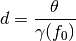

skrf.tlineFunctions.electrical_length_2_distance¶
- skrf.tlineFunctions.electrical_length_2_distance(theta, gamma, f0, deg=True)¶
Convert electrical length to a physical distance.

Parameters : theta : number or array-like
electical length. units depend on deg option
gamma : function
propagation constant function, which takes frequency in hz as a sole argument. see Notes
f0 : number or array-like
frequency at which to calculate
deg : Boolean
return in degrees or not.
Returns : d: physical distance :
See also
- distance_2_electrical_length
- opposite conversion
Notes
the convention has been chosen that forward propagation is represented by the positive imaginary part of the value returned by the gamma function

Previous topic
skrf.tlineFunctions.distance_2_electrical_length
Next topic
skrf.tlineFunctions.reflection_coefficient_at_theta